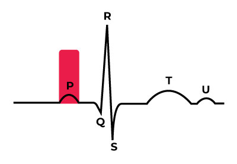
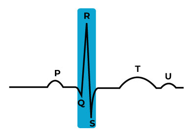
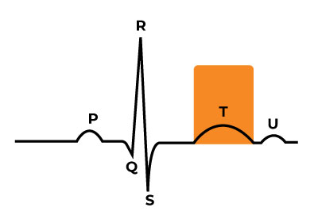
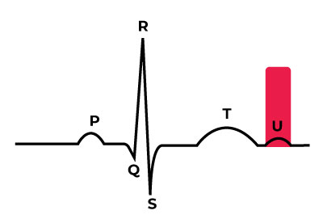
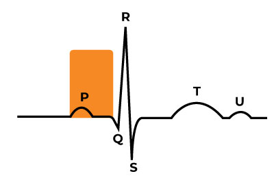
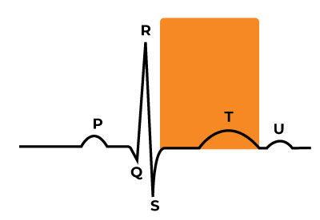
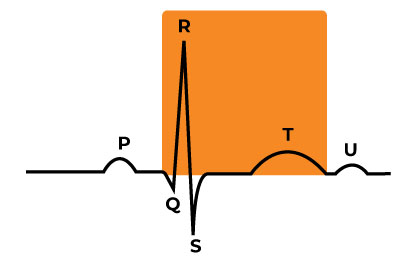
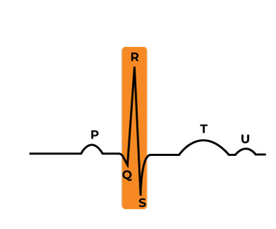
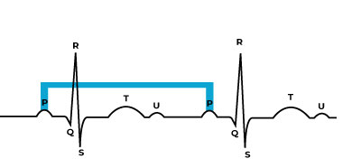

The P-Wave
The P-wave is the first deflection and is normally a positive waveform representing atrial depolarization. Atrial depolarization is triggered by an electrical impulse from the hearts principal pacemaker, the SA Node (sino-atrial node). This impulse is what causes the contraction of the atria in your heart.
The P-wave shape is usually smooth & rounded and precedes the QRS complex. The normal duration is 0.06-0.11 seconds. When evaluating the P-Wave, ask yourself the following:
- Are they present?
- Do they occur regularly?
- Is there one P-wave for each QRS complex?
- Are the P-Waves smooth, rounded & upright?
- Do all P-Waves have similar shapes?
The QRS Complex
The QRS complex follows the P wave & represents ventricular depolarization and contraction.
It normally begins with a downward deflection, Q; a larger upward deflection, R; and then a downward S wave.
When evaluating a QRS Complex, ask yourself the following:
- Does the QRS interval fall within the range of 0.08-0.10 seconds?
- Are the QRS complexes similar in appearance across the ECG tracing?
The T-Wave
The T wave is normally an upward waveform representing repolarization of the ventricles. It is a slightly asymmetrical waveform that follows the QRS complex. A t-wave will usually follow the same direction as the QRS complex that preceded it (positive or negative).
When a T-wave occurs in the opposite direction of the QRS complex it usually signifies some sort of cardiac pathology.
When evaluating the T-Wave, ask yourself the following:
- Do the T waves have a downward (negative) deflection?
- Are the T waves tall, with pointed peaks?
The U-Wave
U-Wave
The U-Wave succeeds the T wave & indicates the recovery of the Purkinje conduction fibers. This wave-form may not be observable.
Segments & Intervals:
Electrocardiographic Segment: Line (usually isoelectric) that connects two waves without including either one of them.
Electrocardiographic Interval: Portion of the EKG that includes a segment and one or more waves.
PR-Interval:
The PR-Interval indicates AV conduction time, to measure this interval- start from the beginning of the P wave until the beginning of the QRS complex.
The normal interval is 0.12 to 0.20 seconds. This interval shortens with increased heart rate.
When evaluating the PRI:
- Does the PR-Interval fall within the norm of 0.12-0.20 seconds?
- Is the PR-Interval constant across the ECG tracing?
ST-Segment:
The ST segment represents the early part of ventricular repolarization & is measured at the baseline from the end of the QRS complex to the beginning of the T wave.
QT-Interval:
The QT interval represents the time of ventricular activity including both depolarization and repolarization.
It is measured from the beginning of the QRS complex to the end of the T wave. The normal QT interval is .36 to 0.44 seconds (9-11 boxes). It is important to note that the QT-interval will vary with patient gender, age & heart rate.
Another guideline is that normal QT intervals are less than half of the R-R interval for heart rates below 100 bpm.
QRS-Interval
The QRS interval measures the total time of ventricular depolarisation. It is measured from the beginning of the Q-wave until the end of the S-wave & the normal value ranges 0.06s & 0.10s.
R-R Interval

The R-R interval is the distance between two consecutive R waves & represents ventricular rate.
The duration of the R-R interval depends on heart rate. In sinus rhythm this interval should be constant.
The R-R is measured from the beginning of an R-wave to the beginning of the next R-wave.
P-P Interval
The P-P interval is the distance between two consecutive P waves & represents atrial rate. The duration of the P-P interval depends on heart rate.
In sinus rhythm this interval should be constant. The P-P is measured from the beginning of an P-wave to the beginning of the next P-wave.